Low Dimensional Projection of Cytometry Samples
Philippe Hauchamps
Laurent Gatto
Source:vignettes/CytoMDS.Rmd
CytoMDS.RmdAbstract
This vignette describes the functionality implemented in the
CytoMDS package. CytoMDS provides
support for low dimensional projection of a set of cytometry
samples, using concepts such as Earth Mover’s (EMD) distance, and
Multi Dimensional Scaling (MDS). This vignette is distributed
under a CC BY-SA 4.0 license.
Installation
To install this package, start R and enter (un-commented):
# if (!require("BiocManager", quietly = TRUE))
# install.packages("BiocManager")
#
# BiocManager::install("CytoMDS")Loading dependent packages for the present vignette…
Introduction
The CytoMDS package implements a low dimensional
visualization of a set of cytometry samples, in order to visually assess
the ‘distances’ between them. This, in turn, can greatly help the user
to identify quality issues like batch effects or outlier samples, and/or
check the presence of potential sample clusters that might align with
the experimental design.
The CytoMDS algorithm combines, on the one hand, the
concept of Earth Mover’s Distance (EMD) (Orlova et al. 2016), a.k.a. Wasserstein
metric and, on the other hand, the metric Multi Dimensional
Scaling (MDS) algorithm for the low dimensional projection (Leeuw and Mair 2009).
Also, the package provides some diagnostic tools for both checking the quality of the MDS projection, as well as tools to help with the interpretation of the axes of the projection (see below sections).
Illustrative datasets
Illustrative data sets that will be used throughout this vignette are derived from a reference public dataset accompanying the OMIP-021 (Optimized Multicolor Immunofluorescence Panel 021) article (Gherardin et al. 2014).
A sub-sample of this public dataset is built-in in the
CytoPipeline package (Hauchamps and
Gatto 2023) as the OMIP021 dataset.
In the CytoMDSpackage, as in the current vignette,
matrices of flow cytometry events intensities are stored as
flowCore::flowFrame (Ellis et al.
2023) objects.
Note that the OMIP021 dataset only contains two samples,
from two human donors. Therefore, in order to be able to meaningfully
illustrate CytoMDS use cases, we will be building data sets
with more samples, simulated by combining events, sampled from the two
original OMIP021 samples.
The first step consists in scale transforming the two raw flow
frames, using estimated scale transformations. Indeed, distances between
samples make more sense with scaled transformed signal, in which
distributional differences are much more obvious. In order to transform
the signal of the different channels, here we use the
estimateScaleTransforms() function from the
CytoPipeline package. However, this can be done using any
standard package for flow cytometry data.
data(OMIP021Samples)
#outputDir <- base::tempdir()
transList <- estimateScaleTransforms(
ff = OMIP021Samples[[1]],
fluoMethod = "estimateLogicle",
scatterMethod = "linearQuantile",
scatterRefMarker = "BV785 - CD3")
OMIP021Trans <- CytoPipeline::applyScaleTransforms(
OMIP021Samples[,c(1:16,18,20:22)], # removing 'EMPTY' channels
transList)We now create two simulated data sets, of 20 samples each, by combining events from the two samples of the OMIP021 original data set.
We also attached to each sample, some ‘phenoData’ dataframe, describing each sample with some chosen variables.
The first simulated data set, which is called here
OMIP021Sim1, is built by sub-sampling 5 times from each of
the two samples (alternatively).
nSample <- 20
ffList <- list()
# to allow for reproducibility of sample()
set.seed(0)
for (i in seq_len(nSample)) {
ffList[[i]] <- CytoPipeline::subsample(
OMIP021Trans[[(i+1)%%2+1]],
nEvents = 1000,
seed = i)
}
OMIP021Sim1 <- as(ffList, "flowSet")
pData1 <- data.frame(name = paste0("S", seq_len(nSample)),
original_sample = factor(rep(c(1,2), 5)))The second one, OMIP021Sim2 is built by mixing events
from sample 1 and sample 2 with respective proportions varying from 1 to
0 (resp. 0 to 1).
nSample <- 20
ffList <- list()
S1prop <- rep(0., nSample)
# to allow for reproducibility of sample()
set.seed(0)
for (i in seq_len(nSample)) {
if (i==1) {
ffList[[i]] <- OMIP021Trans[[1]]
S1prop[i] <- 1
} else if (i==nSample) {
ffList[[i]] <- OMIP021Trans[[2]]
S1prop[i] <- 0
} else {
ff1 <- CytoPipeline::subsample(
OMIP021Trans[[1]],
nEvents = 1000 * (nSample-i)/(nSample-1),
seed = i)
ff2 <- CytoPipeline::subsample(
OMIP021Trans[[2]],
nEvents = 1000 * (i-1)/(nSample-1),
seed = i)
S1prop[i] <- (nSample-i)/(nSample-1)
ffList[[i]] <- CytoPipeline::aggregateAndSample(
flowCore::flowSet(ff1, ff2),
nTotalEvents = 1000000 # big number to have a simple aggregation
)[,1:20]
}
}
OMIP021Sim2 <- as(ffList, "flowSet")
pData2 <- data.frame(name = paste0("S", seq_len(nSample)),
origin = factor(c("Raw", rep("Sim", nSample-2), "Raw")),
rawLabel = c("D1", rep("", nSample-2), "D2"),
S1prop = S1prop)Calculating distances between samples
We can now calculate pairwise Earth Mover’s Distances (EMD) between all samples of our simulated data sets.
This is done by calling the pairwiseEMDDist()
function.
The latter function takes here a flowCore::flowSet as input
parameter, which is a collection of all samples as
flowCore::flowFrame objects. Note that, for heavy data sets
that contains a lot of samples, this can create memory issues. In that
case, there are other ways to call the pairwiseEMDDist()
function (see ‘Handling heavy data sets’ section).
Using the channels argument, it is possible to restrict
the EMD calculation to some of the channels. However, by default, all
signal channels will be incorporated. Signal channels
means all scatter and fluorescent channels. The known non-relevant
channels for multivariate distribution distances, like time and other
usual house-keeping channels, are automatically excluded from the
calculation.
pwDist1 <- pairwiseEMDDist(
OMIP021Sim1, channels = NULL)
pwDist2 <- pairwiseEMDDist(
OMIP021Sim2, channels = NULL)The calculated distance is a symmetric square matrix, with as many
rows (columns) as input samples (extract shown here below for
OMIP021Sim1 simulated data set).
round(pwDist1[1:10, 1:10], 2)## 1 2 3 4 5 6 7 8 9 10
## 1 0.00 1.77 0.56 1.63 0.66 1.68 0.50 1.77 0.42 1.86
## 2 1.77 0.00 1.90 0.51 2.18 0.58 1.63 0.44 1.96 0.44
## 3 0.56 1.90 0.00 1.78 0.67 1.93 0.68 1.84 0.57 2.03
## 4 1.63 0.51 1.78 0.00 1.95 0.60 1.55 0.55 1.76 0.60
## 5 0.66 2.18 0.67 1.95 0.00 2.06 0.97 2.21 0.46 2.26
## 6 1.68 0.58 1.93 0.60 2.06 0.00 1.60 0.74 1.87 0.63
## 7 0.50 1.63 0.68 1.55 0.97 1.60 0.00 1.59 0.70 1.72
## 8 1.77 0.44 1.84 0.55 2.21 0.74 1.59 0.00 1.96 0.50
## 9 0.42 1.96 0.57 1.76 0.46 1.87 0.70 1.96 0.00 2.04
## 10 1.86 0.44 2.03 0.60 2.26 0.63 1.72 0.50 2.04 0.00One relevant way to visualize this distance matrix is to draw the
histogram of pairwise distances, as shown in the below plot, for the
OMIP021Sim1 simulated data set. Notice here the bi-modal
distribution of the distances, due to the way the data set was generated
(half of the samples originate from sub-sampling the first original
sample, and the other half originates from sub-sampling of the second
original sample.)
distVec1 <- pwDist1[upper.tri(pwDist1)]
distVecDF1 <- data.frame(dist = distVec1)
pHist1 <- ggplot(distVecDF1, mapping = aes(x=dist)) +
geom_histogram(fill = "darkgrey", col = "black", bins = 15) +
theme_bw() + ggtitle("EMD distances for data set 1")
pHist1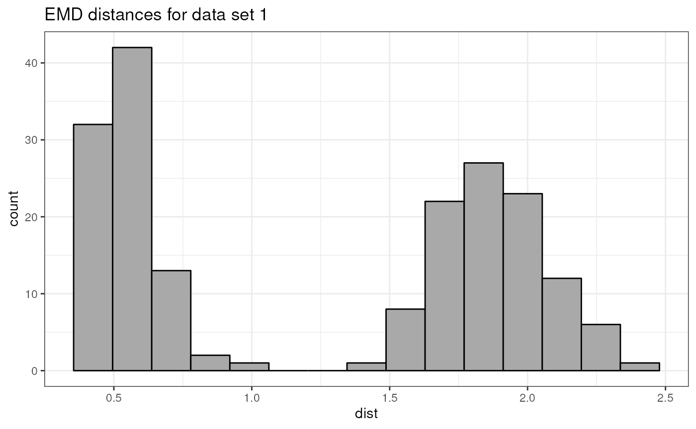
The same type of pairwise distance histogram, but this time for the
OMIP021Sim12 simulated data set, looks much different: here
the distribution is unimodal and more regular, as one can expect from
the way this second simulated data set was generated.
distVec2 <- pwDist2[upper.tri(pwDist2)]
distVecDF2 <- data.frame(dist = distVec2)
ggplot(distVecDF2, mapping = aes(x=dist)) +
geom_histogram(bins = 15, fill = "darkgrey", col = "black") +
theme_bw() + ggtitle("EMD distances for data set 2")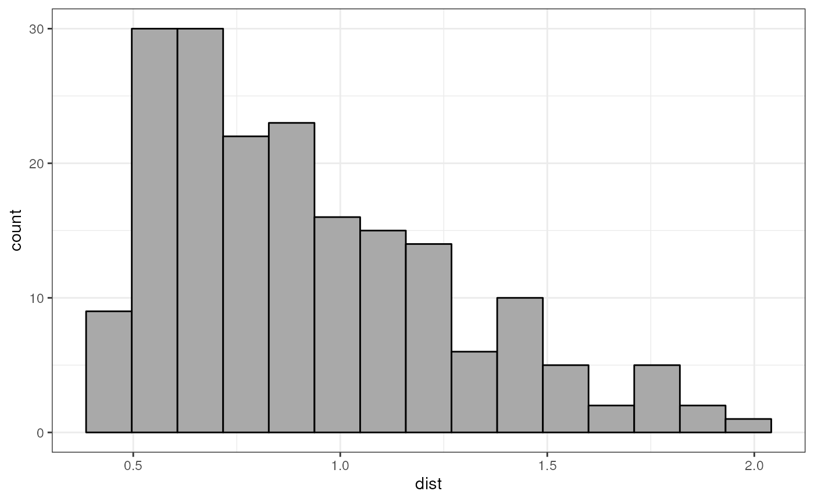
Metric Multidimensional scaling
Calculating the MDS projection
Once the pairwise distance matrix has been calculated, computing the
Multi Dimensional Scaling (MDS) projection is done by calling
the computMetricMDS() function. In its simplest form, only
the distance matrix needs to be passed to the function. In that case,
the number of dimensions to use in the MDS is automatically set in order
to reach a specific value for a projection quality indicator, i.e. a
target pseudo R square, which in turn is set by default set to
0.95 (see Quality of projection - diagnostic tools section).
Note that the Smacof algorithm (Leeuw and Mair 2009), used to compute the MDS projection, is stochastic, so it is sensitive to the ‘seed’ used. Therefore, in cases where reproducible results from one run to another is required , it is advised to set the seed argument to a specific value.
mdsObj1 <- CytoMDS::computeMetricMDS(pwDist1, seed = 0)## Warning in rgl.init(initValue, onlyNULL): RGL: unable to open X11 display## Warning: 'rgl.init' failed, running with 'rgl.useNULL = TRUE'.Plotting the MDS projection
Plotting the obtained MDS projection is done using
ggplotSampleMDS(). If no phenoData is used, then, by
default, numbers are used as labels, and the samples are represented as
black dots.
ggplotSampleMDS(mdsObj1)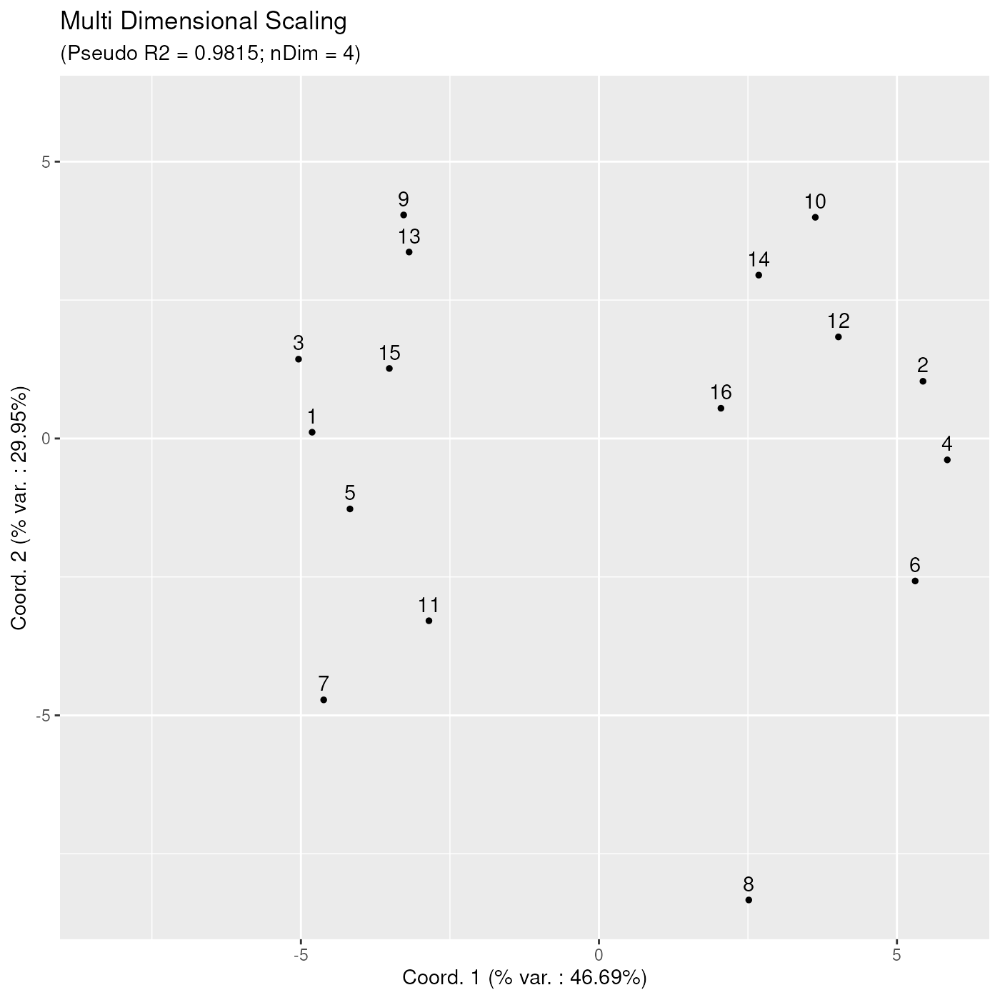
However, by providing a ‘phenoData’ dataframe to the
ggplotSampleMDS() function, the corresponding variable can
be used for highlighting sample points with different colours and/or
shapes. Here below, the previous plot is enhanced with red and blue
colours, dot and triangle shapes, distinguishing samples based on the
value of the original_sample variable. Also, we have here
added explicit labels to each data point, using the corresponding value
of the name variable for each sample.
ggplotSampleMDS(mdsObj1,
pData = pData1,
pDataForColour = "original_sample",
pDataForShape = "original_sample",
pDataForLabel = "name")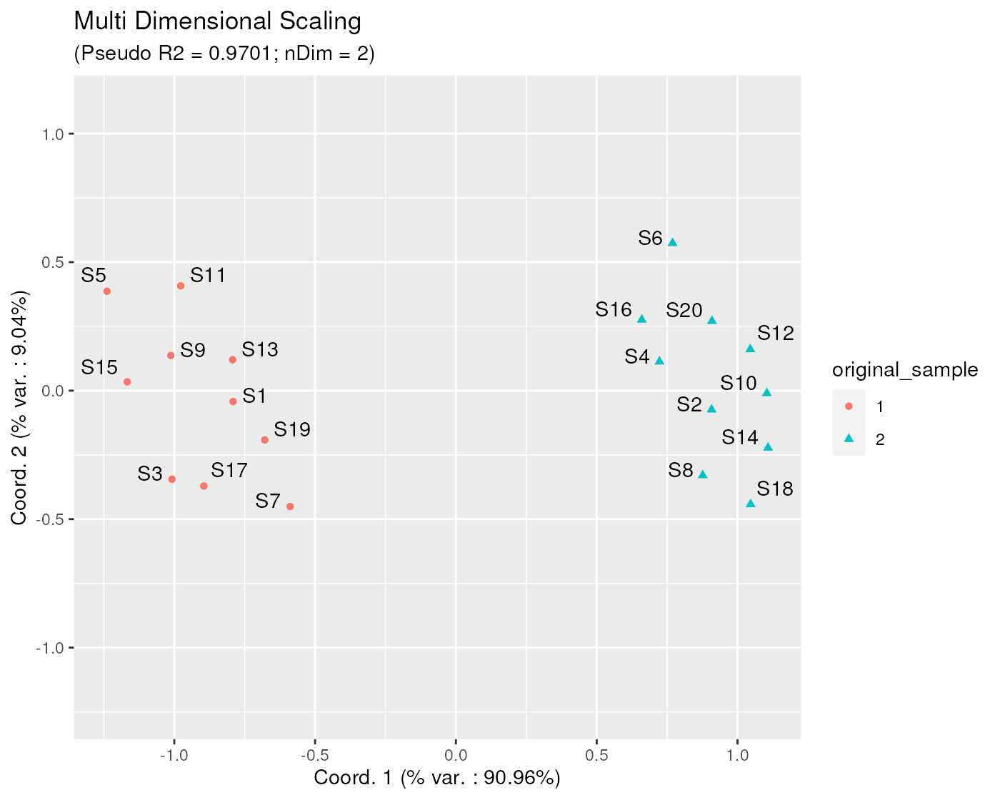
Quality of projection - diagnostic tools
In order to be able to trust the projected distances obtained on the
CytoMDS plots, a couple of projection quality indicators
need to be taken into account: - the pseudo RSquare indicator
shows what percentage of the variability contained in the pairwise
distance matrix is actually shown in the projection. It is analog to the
statistical RSquare for a linear regression model: the closer
to one the pseudo RSquare is, the better.
Note that the latter refers to the variability contained in ALL dimensions of the MDS projection, not only the two plotted axes. - nDim is the number of dimensions of the projection that was needed to obtain the corresponding pseudo RSquare - the percentage of variation that is captured along each axis (coordinates), is to be interpreted with respect to the total variability that is captured by the MDS projection, not the total variability. For example, in the plot above, using 2 dimensions, the MDS projection is able to capture 97.01% (pseudo RSquare) of the initial variability contained in the calculated pairwise distance matrix. Of these 97.01%, 90.96% is in turn captured by axis 1, and 9.04% is captured by axis 2.
Another useful projection quality diagnostic tool is provided by the Shepard diagram. On this plot, each dot represents one distance between a sample pair, with as x coordinate the original (high dimensional) distance between the two samples, and as y coordinate the projected low dimensional distance between these two samples, as obtained by the MDS projection algorithm. In the Shepard diagram, an ideal situation corresponds to all points being located on the straight line passing through through the (0,0) and (1,1) points.
ggplotSampleMDSShepard(mdsObj1)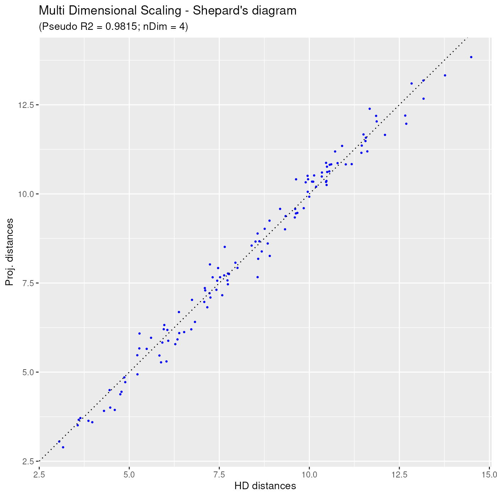
Additional options
In order to show some of the additional options available to the user
of computeMetricMDS() and ggplotSampleMDS(),
let us project the pairwise sample distances of the
OMIP021Sim2 data set.
mdsObj2 <- CytoMDS::computeMetricMDS(pwDist2)
ggplotSampleMDS(mdsObj2,
pData = pData2,
pDataForLabel = "rawLabel",
pDataForShape = "origin",
pDataForColour = "S1prop")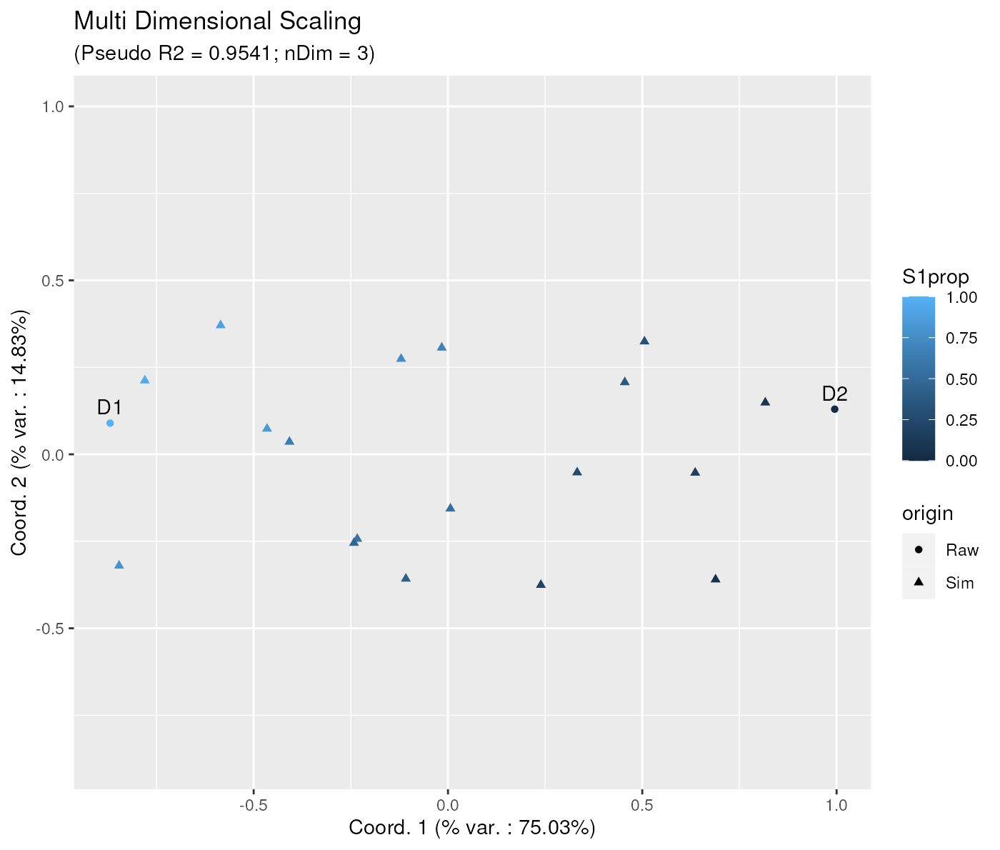
In the subtitle of this latter plot, it is mentioned that the obtained R square of 95.41% was obtained thanks when using 3 dimensions in the Multi Dimensional Scaling. Therefore, one can visualize the MDS projection using any combination of two axes, for example axes 2 and 3, as below:
ggplotSampleMDS(mdsObj2,
projectionAxes = c(2, 3),
pData = pData2,
pDataForLabel = "rawLabel",
pDataForShape = "origin",
pDataForColour = "S1prop")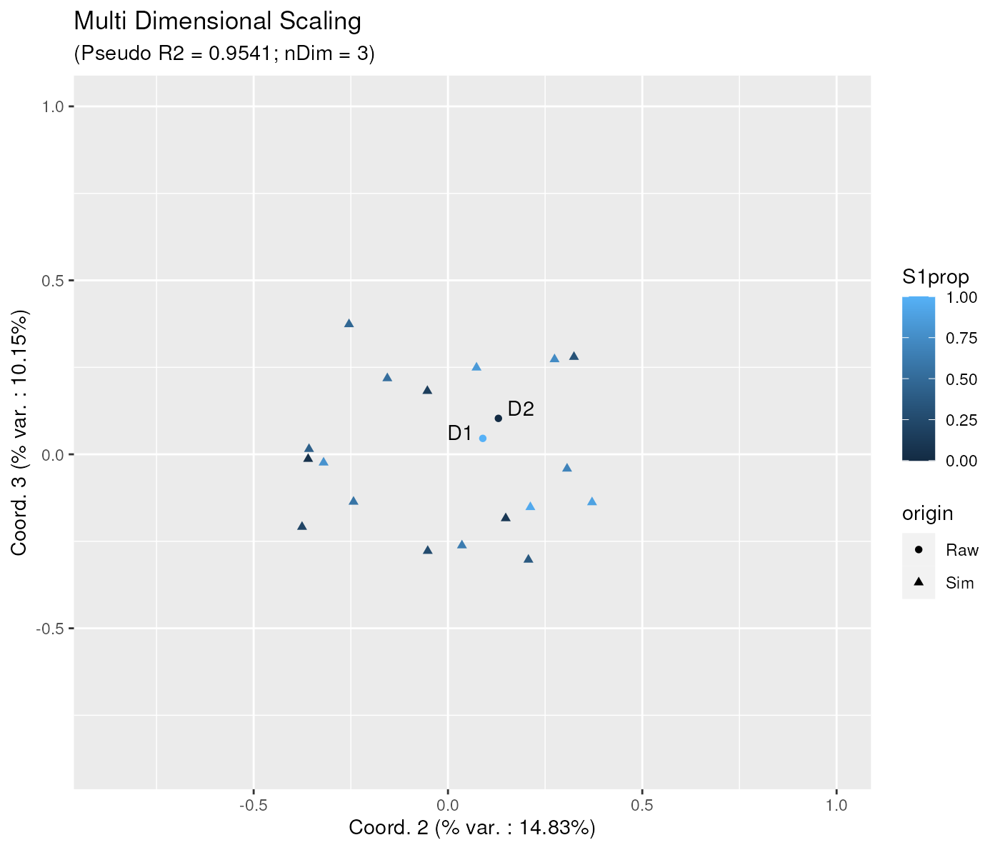
Now it is also possible to impose the number of dimensions used in the MDS projection explicitly, for example to 2, as is shown below:
mdsObj2_2 <- CytoMDS::computeMetricMDS(pwDist2, nDim = 2)
ggplotSampleMDS(mdsObj2_2,
pData = pData2,
pDataForLabel = "rawLabel",
pDataForShape = "origin",
pDataForColour = "S1prop")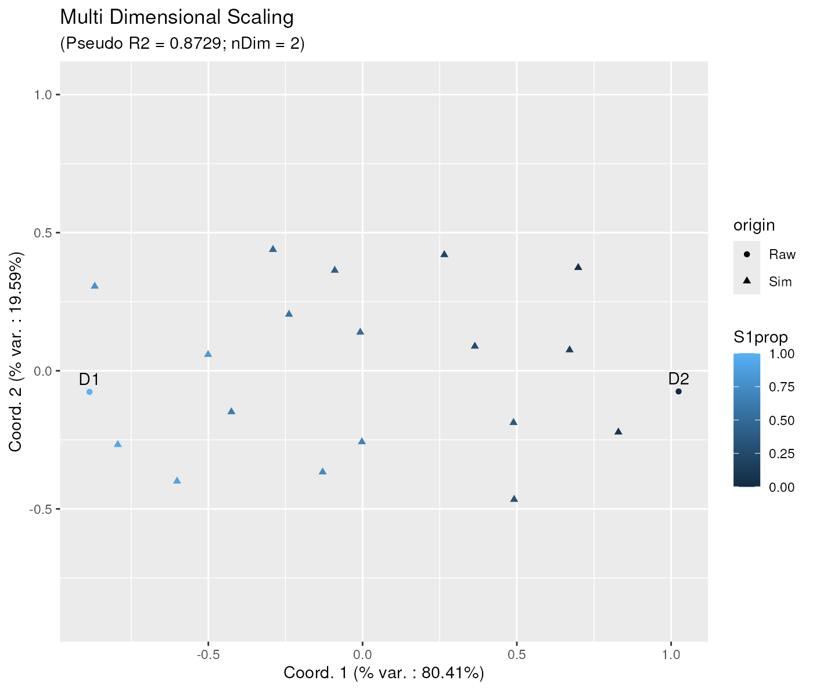
Note that the obtained projection on 2 axes, although similar, is not exactly the same as the one obtained when visualizing the first two axis of the MDS projected before, on 3 dimensions. Actually, this is a feature of the Metric MDS projection, although it might appear a bit counter-intuitive at first.
Finally, it is also possible to adjust the number of dimensions indirectly, by setting an explicit pseudo Rsquare target. In that case the algorithm will increase the number of dimensions until reaching the required quality target. The below example shows how to obtain a pseudo R Square of at least 0.99. Here the obtained number of dimensions is 6, instead of 3.
mdsObj2_3 <- CytoMDS::computeMetricMDS(pwDist2, targetPseudoRSq = 0.99)
ggplotSampleMDS(mdsObj2_3,
pData = pData2,
pDataForLabel = "rawLabel",
pDataForShape = "origin",
pDataForColour = "S1prop")The corresponding Shepard diagram is obtained as below:
ggplotSampleMDSShepard(mdsObj2_3)
Aid to interpreting projection axes
With MDS projections, it is possible to (try to) associate some axis directions to specific characteristics of the samples. The idea is to calculate the correlation of well chosen sample statistics w.r.t. the axes of projection, so that these correlations can be represented on a correlation circle, which is in turn overlaid on the projection plot. This plot set-up is called a ‘bi-plot’.
In order to leverage on this functionality, the user first needs to calculate some statistics of interest for which they want to assess the association with the axis directions. Typically, one chooses channel specific statistics, like e.g. the mean, the standard deviation, or any quantile that might be of interest. However, any statistics that can be calculated for each sample can be used (number of events,…)
Here below, we provide an example where the user overlays the median of the different channels, on a bi-plot for the MDS projection obtained for the first data set.
On the bi-plot, each arrow - here representing a channel median - is located at coordinates equal to its Pearson correlation with the respective axis.
Here, one can identify that the x axis has a strong positive correlation with the median of markers ‘Viability’, ‘gdTCR’, ‘TCR Va7’, ‘CD45-RA’, ‘CD8a’ and ‘CD27’, and a strong negative correlation with the median of channels ‘FSC-A’, ‘SSC-A’ and marker ‘CD161’. The y axis has a strong negative correlation with the medians of markers ‘CD28’, and ‘CD3’.
medians <- channelSummaryStats(OMIP021Sim1, statFUNs = median)
ggplotSampleMDS(mdsObj1,
pData = pData1,
pDataForColour = "original_sample",
pDataForShape = "original_sample",
displayPointLabels = FALSE,
displayArrowLabels = TRUE,
repelArrowLabels = TRUE,
biplot = TRUE,
extVariables = medians)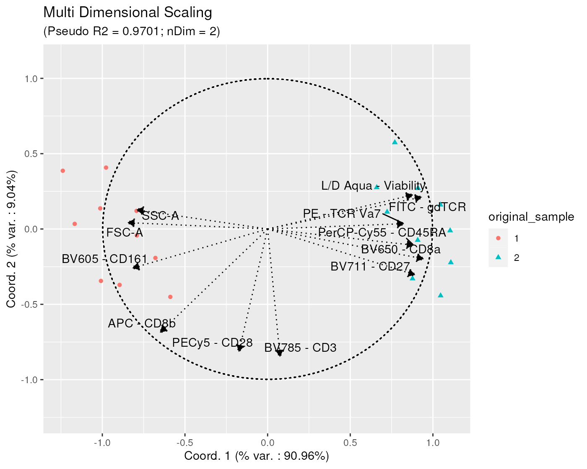
Note that, on the bi-plots, only the arrows of length greater or equal to a specific threshold (by default set at 0.8) are represented, in order to not overwhelm the plot with arrows, especially when the data sets contains a high dimensional panels.
It is however possible to adjust this threshold by explicitly setting
the arrowThreshold argument. For example, in the below
plot, this threshold is set set to 0.9:
ggplotSampleMDS(mdsObj1,
pData = pData1,
pDataForColour = "original_sample",
pDataForShape = "original_sample",
displayPointLabels = FALSE,
displayArrowLabels = TRUE,
repelArrowLabels = TRUE,
biplot = TRUE,
extVariables = medians,
arrowThreshold = 0.9) 
Instead of having one bi-plot related to a specific type of statistics, for example channel medians, one can try to associate the axes to different types of channel statistics at once. In the next plot, we represent such bi-plots for channel medians, 25% and 75% quantiles, and standard deviations.
The ‘faceting-alike’ plot is obtained thanks to the
ggplotSampleMDSWrapBiplots() function, which internally
calls ggplotSampleMDS() function several times, and arrange
the obtained outputs on a single plot.
statFUNs = c("median" = stats::median,
"Q25" = function(x, na.rm) {
stats::quantile(x, probs = 0.25)
},
"Q75" = function(x, na.rm) {
stats::quantile(x, probs = 0.75)
},
"standard deviation" = stats::sd)
chStats <- channelSummaryStats(OMIP021Sim1, statFUNs = statFUNs)
ggplotSampleMDSWrapBiplots(
mdsObj1,
extVariableList = chStats,
ncol = 2,
pData = pData1,
pDataForColour = "original_sample",
pDataForShape = "original_sample",
displayPointLabels = FALSE,
displayArrowLabels = TRUE,
repelArrowLabels = TRUE,
arrowThreshold = 0.9,
displayLegend = FALSE) ## Warning: ggrepel: 13 unlabeled data points (too many overlaps). Consider
## increasing max.overlaps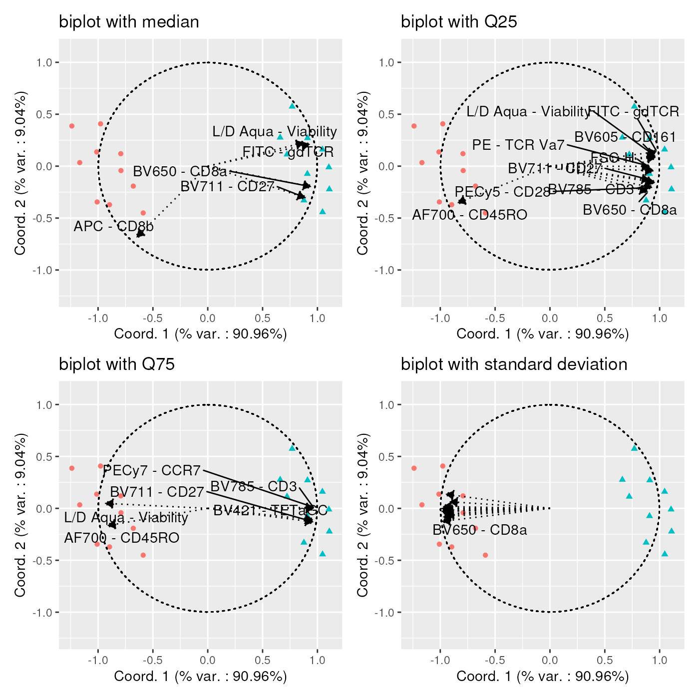
Note that the last plot, with arrows corresponding to channel standard deviations, ganerates a warning indicating that the arrow labels could not be displayed. This is due to the fact that too many channel standard deviations are strongly negatively correlated with the x axis. When encountering such visual issues, it is advised to generate series of bi-plots, with subsets of channel statistics, in order to better identify the strongly correlated ones. One example is provided below:
stdDevs <- list()
stdDevs[["std dev of channels 1 to 6"]] <-
chStats[["standard deviation"]][,1:6]
stdDevs[["std dev of channels 7 to 12"]] <-
chStats[["standard deviation"]][,7:12]
stdDevs[["std dev of channels 13 to 18"]] <-
chStats[["standard deviation"]][,13:18]
ggplotSampleMDSWrapBiplots(
mdsObj1,
ncol = 1,
extVariableList = stdDevs,
pData = pData1,
pDataForColour = "original_sample",
pDataForShape = "original_sample",
displayPointLabels = FALSE,
displayArrowLabels = TRUE,
repelArrowLabels = TRUE,
arrowThreshold = 0.9) 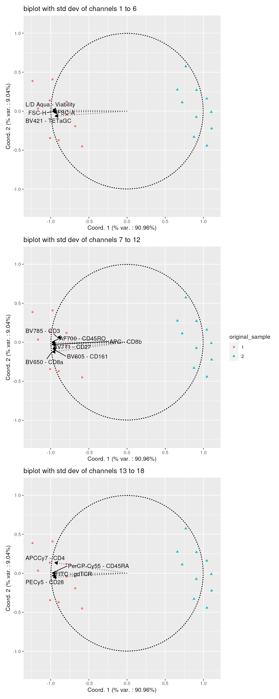
Handling heavy datasets
Computing Earth Mover’s Distances between all sample pairs of large data sets (e.g. with hundreds of samples), is a heavy computational task.
First, loading the whole data set as a
flowCore::flowSet() in RAM at once, might not be possible
due to its size. Second, calculating a matrix of pairwise distances, has
a computational complexity of O(N2), which can lead to very long
computation times for large data sets.
Therefore, the CytoMDS package provides several
mechanisms allowing to mitigate these issues.
Loading flow frames dynamically during distance matrix computation
In order to be able to handle data set of greater size than the
available computer RAM, the pairwiseEMDDist() function
allows for differential input mode, where: - the input samples are NOT
provided directly via a flowCore::flowSet, but - the user
provides the nb of samples, and a user-written flow frame loading
function that will be called to dynamically load the ith sample
upon request, and optionally additional arguments.
Typically, the flow frame loading function provided by the user shall describe how to read the ith sample from disk.
In the below, an example using data set OMIP021Sim1 is
provided. This is
for illustrative purpose only, as this data set is light enough to
reside fully in memory. In such a workflow, it is advised, as a
preliminary step, to store all scale transformed samples on disk. Here
we do this in a temporary directory. Note this scale transformation
could also be done on the fly, as part of the flow frame loading
function. However, this would then require scale transforming the
channel intensities a number of times during distance matrix
calculation, which would be inefficient.
storageLocation <- suppressMessages(base::tempdir())
nSample <- length(OMIP021Sim1)
fileNames <- file.path(
storageLocation,
paste0("OMIP021Sim1_Sample", seq_len(nSample), ".rds"))
for (i in seq_len(nSample)) {
saveRDS(OMIP021Sim1[[i]],
file = fileNames[i])
}Then, we now call the pairwiseEMDDist() function, and
specify a loading function.
pwDist1Again <- pairwiseEMDDist(
x = nSample,
loadFlowFrameFUN = function(ffIndex, theFiles){
readRDS(file = theFiles[ffIndex])
},
loadFlowFrameFUNArgs = list(theFiles = fileNames),
verbose = TRUE
)## Pre-calculating all histograms...## Loading file 1...## Calculating histogram for file 1...## Loading file 2...## Calculating histogram for file 2...## Loading file 3...## Calculating histogram for file 3...## Loading file 4...## Calculating histogram for file 4...## Loading file 5...## Calculating histogram for file 5...## Loading file 6...## Calculating histogram for file 6...## Loading file 7...## Calculating histogram for file 7...## Loading file 8...## Calculating histogram for file 8...## Loading file 9...## Calculating histogram for file 9...## Loading file 10...## Calculating histogram for file 10...## Loading file 11...## Calculating histogram for file 11...## Loading file 12...## Calculating histogram for file 12...## Loading file 13...## Calculating histogram for file 13...## Loading file 14...## Calculating histogram for file 14...## Loading file 15...## Calculating histogram for file 15...## Loading file 16...## Calculating histogram for file 16...## Loading file 17...## Calculating histogram for file 17...## Loading file 18...## Calculating histogram for file 18...## Loading file 19...## Calculating histogram for file 19...## Loading file 20...## Calculating histogram for file 20...## Calculating pairwise distances between histograms...## i = 1; j = 2; dist = 1.76925## i = 1; j = 3; dist = 0.5556## i = 1; j = 4; dist = 1.62995## i = 1; j = 5; dist = 0.6623## i = 1; j = 6; dist = 1.67935## i = 1; j = 7; dist = 0.5003## i = 1; j = 8; dist = 1.76675## i = 1; j = 9; dist = 0.4188## i = 1; j = 10; dist = 1.85695## i = 1; j = 11; dist = 0.59835## i = 1; j = 12; dist = 1.84495## i = 1; j = 13; dist = 0.37195## i = 1; j = 14; dist = 1.90415## i = 1; j = 15; dist = 0.5332## i = 1; j = 16; dist = 1.5768## i = 1; j = 17; dist = 0.46625## i = 1; j = 18; dist = 1.9113## i = 1; j = 19; dist = 0.39265## i = 1; j = 20; dist = 1.73065## i = 2; j = 3; dist = 1.89565## i = 2; j = 4; dist = 0.5081## i = 2; j = 5; dist = 2.17985## i = 2; j = 6; dist = 0.5827## i = 2; j = 7; dist = 1.63315## i = 2; j = 8; dist = 0.4436## i = 2; j = 9; dist = 1.96395## i = 2; j = 10; dist = 0.4391## i = 2; j = 11; dist = 1.9695## i = 2; j = 12; dist = 0.4181## i = 2; j = 13; dist = 1.7841## i = 2; j = 14; dist = 0.4271## i = 2; j = 15; dist = 2.02115## i = 2; j = 16; dist = 0.50355## i = 2; j = 17; dist = 1.8465## i = 2; j = 18; dist = 0.51935## i = 2; j = 19; dist = 1.6643## i = 2; j = 20; dist = 0.4097## i = 3; j = 4; dist = 1.78135## i = 3; j = 5; dist = 0.6705## i = 3; j = 6; dist = 1.92735## i = 3; j = 7; dist = 0.6789## i = 3; j = 8; dist = 1.83945## i = 3; j = 9; dist = 0.5709## i = 3; j = 10; dist = 2.02975## i = 3; j = 11; dist = 0.53525## i = 3; j = 12; dist = 1.97165## i = 3; j = 13; dist = 0.57005## i = 3; j = 14; dist = 2.00675## i = 3; j = 15; dist = 0.6302## i = 3; j = 16; dist = 1.7297## i = 3; j = 17; dist = 0.40925## i = 3; j = 18; dist = 1.947## i = 3; j = 19; dist = 0.54205## i = 3; j = 20; dist = 1.93255## i = 4; j = 5; dist = 1.95135## i = 4; j = 6; dist = 0.6006## i = 4; j = 7; dist = 1.55475## i = 4; j = 8; dist = 0.5472## i = 4; j = 9; dist = 1.75765## i = 4; j = 10; dist = 0.5975## i = 4; j = 11; dist = 1.8457## i = 4; j = 12; dist = 0.4716## i = 4; j = 13; dist = 1.6647## i = 4; j = 14; dist = 0.6292## i = 4; j = 15; dist = 1.91555## i = 4; j = 16; dist = 0.42345## i = 4; j = 17; dist = 1.7772## i = 4; j = 18; dist = 0.67705## i = 4; j = 19; dist = 1.5781## i = 4; j = 20; dist = 0.4644## i = 5; j = 6; dist = 2.06245## i = 5; j = 7; dist = 0.9733## i = 5; j = 8; dist = 2.20845## i = 5; j = 9; dist = 0.4595## i = 5; j = 10; dist = 2.26375## i = 5; j = 11; dist = 0.58575## i = 5; j = 12; dist = 2.19265## i = 5; j = 13; dist = 0.63315## i = 5; j = 14; dist = 2.33165## i = 5; j = 15; dist = 0.5165## i = 5; j = 16; dist = 1.9022## i = 5; j = 17; dist = 0.76855## i = 5; j = 18; dist = 2.3527## i = 5; j = 19; dist = 0.81135## i = 5; j = 20; dist = 2.10035## i = 6; j = 7; dist = 1.60175## i = 6; j = 8; dist = 0.7385## i = 6; j = 9; dist = 1.87115## i = 6; j = 10; dist = 0.6313## i = 6; j = 11; dist = 1.8147## i = 6; j = 12; dist = 0.6742## i = 6; j = 13; dist = 1.7136## i = 6; j = 14; dist = 0.7753## i = 6; j = 15; dist = 1.91265## i = 6; j = 16; dist = 0.55255## i = 6; j = 17; dist = 1.8616## i = 6; j = 18; dist = 0.86815## i = 6; j = 19; dist = 1.6282## i = 6; j = 20; dist = 0.4977## i = 7; j = 8; dist = 1.58885## i = 7; j = 9; dist = 0.6984## i = 7; j = 10; dist = 1.72295## i = 7; j = 11; dist = 0.77395## i = 7; j = 12; dist = 1.73335## i = 7; j = 13; dist = 0.53125## i = 7; j = 14; dist = 1.73185## i = 7; j = 15; dist = 0.7266## i = 7; j = 16; dist = 1.465## i = 7; j = 17; dist = 0.51825## i = 7; j = 18; dist = 1.7288## i = 7; j = 19; dist = 0.44405## i = 7; j = 20; dist = 1.64745## i = 8; j = 9; dist = 1.95965## i = 8; j = 10; dist = 0.4972## i = 8; j = 11; dist = 2.0653## i = 8; j = 12; dist = 0.4714## i = 8; j = 13; dist = 1.8184## i = 8; j = 14; dist = 0.4517## i = 8; j = 15; dist = 2.07105## i = 8; j = 16; dist = 0.57195## i = 8; j = 17; dist = 1.8139## i = 8; j = 18; dist = 0.39635## i = 8; j = 19; dist = 1.6594## i = 8; j = 20; dist = 0.5088## i = 9; j = 10; dist = 2.04465## i = 9; j = 11; dist = 0.54995## i = 9; j = 12; dist = 1.98555## i = 9; j = 13; dist = 0.45605## i = 9; j = 14; dist = 2.10725## i = 9; j = 15; dist = 0.4727## i = 9; j = 16; dist = 1.7225## i = 9; j = 17; dist = 0.56655## i = 9; j = 18; dist = 2.1004## i = 9; j = 19; dist = 0.54895## i = 9; j = 20; dist = 1.89905## i = 10; j = 11; dist = 2.0588## i = 10; j = 12; dist = 0.456## i = 10; j = 13; dist = 1.8845## i = 10; j = 14; dist = 0.3702## i = 10; j = 15; dist = 2.11985## i = 10; j = 16; dist = 0.60155## i = 10; j = 17; dist = 1.9871## i = 10; j = 18; dist = 0.50695## i = 10; j = 19; dist = 1.777## i = 10; j = 20; dist = 0.4208## i = 11; j = 12; dist = 2.048## i = 11; j = 13; dist = 0.5603## i = 11; j = 14; dist = 2.1403## i = 11; j = 15; dist = 0.45555## i = 11; j = 16; dist = 1.76255## i = 11; j = 17; dist = 0.5428## i = 11; j = 18; dist = 2.21025## i = 11; j = 19; dist = 0.6201## i = 11; j = 20; dist = 1.9024## i = 12; j = 13; dist = 1.8701## i = 12; j = 14; dist = 0.4895## i = 12; j = 15; dist = 2.10775## i = 12; j = 16; dist = 0.45175## i = 12; j = 17; dist = 1.9607## i = 12; j = 18; dist = 0.50495## i = 12; j = 19; dist = 1.7726## i = 12; j = 20; dist = 0.4146## i = 13; j = 14; dist = 1.9214## i = 13; j = 15; dist = 0.50905## i = 13; j = 16; dist = 1.58085## i = 13; j = 17; dist = 0.4638## i = 13; j = 18; dist = 1.96335## i = 13; j = 19; dist = 0.4102## i = 13; j = 20; dist = 1.7461## i = 14; j = 15; dist = 2.20185## i = 14; j = 16; dist = 0.64085## i = 14; j = 17; dist = 1.956## i = 14; j = 18; dist = 0.41505## i = 14; j = 19; dist = 1.7949## i = 14; j = 20; dist = 0.4988## i = 15; j = 16; dist = 1.8063## i = 15; j = 17; dist = 0.58645## i = 15; j = 18; dist = 2.2122## i = 15; j = 19; dist = 0.59735## i = 15; j = 20; dist = 1.98965## i = 16; j = 17; dist = 1.71405## i = 16; j = 18; dist = 0.7033## i = 16; j = 19; dist = 1.51255## i = 16; j = 20; dist = 0.44395## i = 17; j = 18; dist = 1.94515## i = 17; j = 19; dist = 0.4321## i = 17; j = 20; dist = 1.8906## i = 18; j = 19; dist = 1.80025## i = 18; j = 20; dist = 0.61825## i = 19; j = 20; dist = 1.6692Using BiocParallel to parallelize distance matrix computation
Finally, CytoMDS pairwise distance calculation supports
parallelization of distance matrix computation, through the use of
BiocParallel package.
When parallelization is used, the calculation engine will automatically create worker tasks corresponding to specific blocks of the distance matrix to be calculated.
Here below is an example, using
BiocParallel::SnowParam() backbone.
bp <- BiocParallel::SnowParam(
stop.on.error = FALSE,
progressbar = TRUE)
pwDist1Last <- suppressWarnings(pairwiseEMDDist(
x = nSample,
loadFlowFrameFUN = function(ffIndex, theFiles){
readRDS(file = theFiles[ffIndex])
},
loadFlowFrameFUNArgs = list(theFiles = fileNames),
useBiocParallel = TRUE,
BPPARAM = bp))##
|
| | 0%
|
|================== | 25%
|
|=================================== | 50%
|
|==================================================== | 75%
|
|======================================================================| 100%
##
##
|
| | 0%
|
|============ | 17%
|
|======================= | 33%
|
|=================================== | 50%
|
|=============================================== | 67%
|
|========================================================== | 83%
|
|======================================================================| 100%The obtained distances - as displayed in the below histogram - are exactly the same as before.
distVec1Last <- pwDist1Last[upper.tri(pwDist1Last)]
distVecDF1Last <- data.frame(dist = distVec1Last)
pHist1Last <- ggplot(distVecDF1Last, mapping = aes(x=dist)) +
geom_histogram(fill = "darkgrey", col = "black", bins = 15) +
theme_bw() + ggtitle("EMD distances for data set 1 - parallel computation")
pHist1Last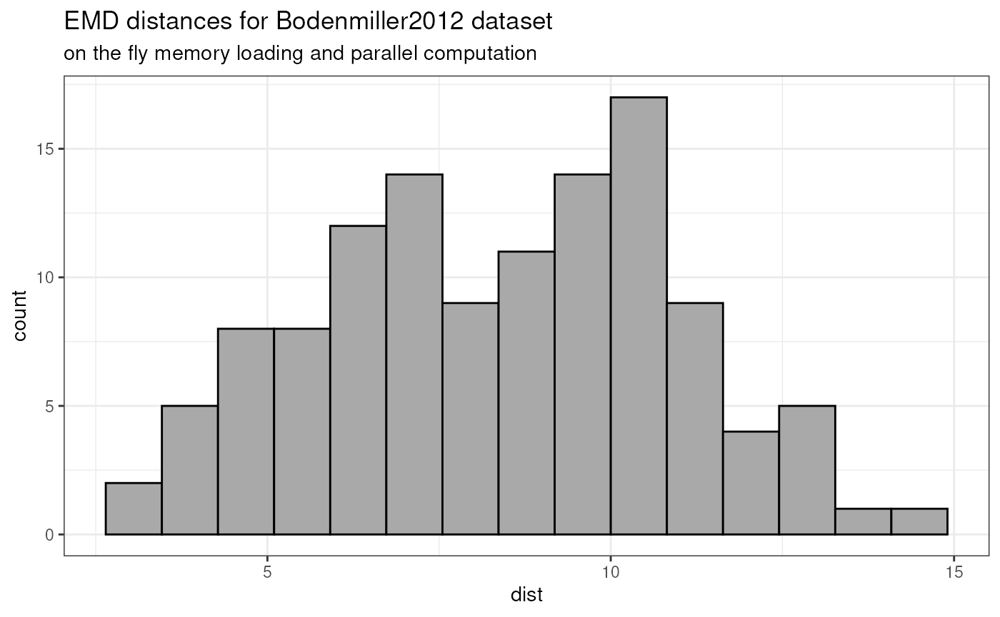
Session information
## R Under development (unstable) (2024-01-31 r85845)
## Platform: x86_64-pc-linux-gnu
## Running under: Ubuntu 22.04.3 LTS
##
## Matrix products: default
## BLAS: /usr/lib/x86_64-linux-gnu/openblas-pthread/libblas.so.3
## LAPACK: /usr/lib/x86_64-linux-gnu/openblas-pthread/libopenblasp-r0.3.20.so; LAPACK version 3.10.0
##
## locale:
## [1] LC_CTYPE=en_US.UTF-8 LC_NUMERIC=C
## [3] LC_TIME=en_US.UTF-8 LC_COLLATE=en_US.UTF-8
## [5] LC_MONETARY=en_US.UTF-8 LC_MESSAGES=en_US.UTF-8
## [7] LC_PAPER=en_US.UTF-8 LC_NAME=C
## [9] LC_ADDRESS=C LC_TELEPHONE=C
## [11] LC_MEASUREMENT=en_US.UTF-8 LC_IDENTIFICATION=C
##
## time zone: UTC
## tzcode source: system (glibc)
##
## attached base packages:
## [1] stats graphics grDevices utils datasets methods base
##
## other attached packages:
## [1] ggplot2_3.4.4 CytoMDS_0.99.9 CytoPipeline_1.3.4 BiocStyle_2.31.0
##
## loaded via a namespace (and not attached):
## [1] RColorBrewer_1.1-3 rstudioapi_0.15.0 jsonlite_1.8.8
## [4] shape_1.4.6 magrittr_2.0.3 jomo_2.7-6
## [7] farver_2.1.1 nloptr_2.0.3 rmarkdown_2.25
## [10] fs_1.6.3 zlibbioc_1.49.0 ragg_1.2.7
## [13] vctrs_0.6.5 memoise_2.0.1 minqa_1.2.6
## [16] heplots_1.6.0 base64enc_0.1-3 htmltools_0.5.7
## [19] polynom_1.4-1 plotrix_3.8-4 weights_1.0.4
## [22] broom_1.0.5 Formula_1.2-5 mitml_0.4-5
## [25] sass_0.4.8 pracma_2.4.4 bslib_0.6.1
## [28] htmlwidgets_1.6.4 desc_1.4.3 plyr_1.8.9
## [31] cachem_1.0.8 lifecycle_1.0.4 iterators_1.0.14
## [34] pkgconfig_2.0.3 Matrix_1.6-5 R6_2.5.1
## [37] fastmap_1.1.1 digest_0.6.34 colorspace_2.1-0
## [40] patchwork_1.2.0 S4Vectors_0.41.3 textshaping_0.3.7
## [43] Hmisc_5.1-1 ellipse_0.5.0 labeling_0.4.3
## [46] cytolib_2.15.2 fansi_1.0.6 nnls_1.5
## [49] gdata_3.0.0 polyclip_1.10-6 abind_1.4-5
## [52] compiler_4.4.0 proxy_0.4-27 withr_3.0.0
## [55] doParallel_1.0.17 htmlTable_2.4.2 backports_1.4.1
## [58] BiocParallel_1.37.0 carData_3.0-5 hexbin_1.28.3
## [61] highr_0.10 ggforce_0.4.1 pan_1.9
## [64] MASS_7.3-60.2 gtools_3.9.5 tools_4.4.0
## [67] foreign_0.8-86 nnet_7.3-19 glue_1.7.0
## [70] nlme_3.1-164 grid_4.4.0 checkmate_2.3.1
## [73] cluster_2.1.6 snow_0.4-4 generics_0.1.3
## [76] gtable_0.3.4 class_7.3-22 tidyr_1.3.1
## [79] data.table_1.15.0 car_3.1-2 utf8_1.2.4
## [82] BiocGenerics_0.49.1 ggrepel_0.9.5 foreach_1.5.2
## [85] pillar_1.9.0 stringr_1.5.1 splines_4.4.0
## [88] flowCore_2.15.2 tweenr_2.0.2 dplyr_1.1.4
## [91] smacof_2.1-5 lattice_0.22-5 survival_3.5-7
## [94] RProtoBufLib_2.15.0 tidyselect_1.2.0 ggcyto_1.31.1
## [97] transport_0.14-6 knitr_1.45 gridExtra_2.3
## [100] bookdown_0.37 flowWorkspace_4.15.4 stats4_4.4.0
## [103] xfun_0.42 Biobase_2.63.0 matrixStats_1.2.0
## [106] stringi_1.8.3 ncdfFlow_2.49.0 yaml_2.3.8
## [109] boot_1.3-28.1 evaluate_0.23 codetools_0.2-19
## [112] wordcloud_2.6 tibble_3.2.1 Rgraphviz_2.47.0
## [115] BiocManager_1.30.22 graph_1.81.0 cli_3.6.2
## [118] rpart_4.1.23 systemfonts_1.0.5 munsell_0.5.0
## [121] jquerylib_0.1.4 candisc_0.8-6 Rcpp_1.0.12
## [124] XML_3.99-0.16.1 parallel_4.4.0 pkgdown_2.0.7.9000
## [127] rgl_1.2.8 lme4_1.1-35.1 glmnet_4.1-8
## [130] scales_1.3.0 e1071_1.7-14 purrr_1.0.2
## [133] rlang_1.1.3 mice_3.16.0